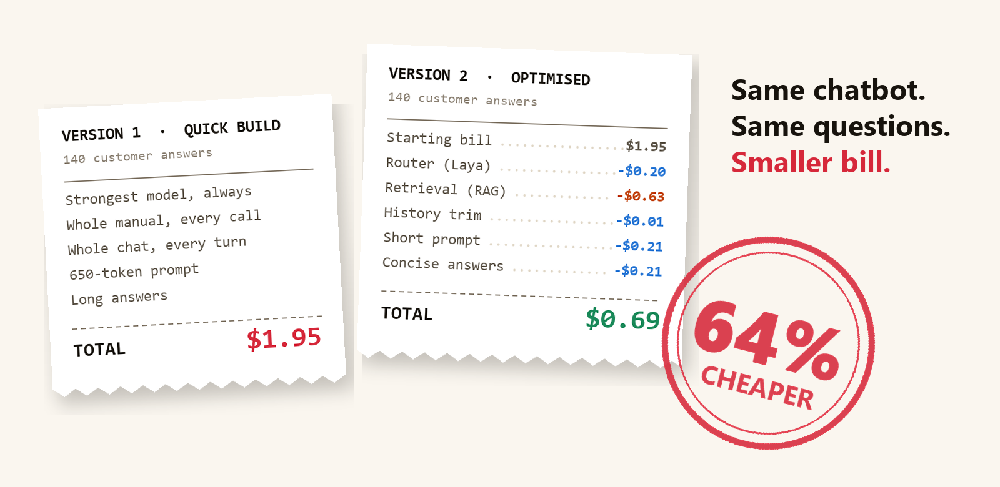

The app. A customer-support chatbot for Leafy, a made-up online plant shop. A customer asks something like "What's your return window?" and the bot answers from Leafy's policy manual, a document of about 3,600 tokens in 9 sections. It runs on Claude models; all data is invented.
Two versions. Version 1 is built the quick way: every question goes to the strongest, most expensive model (Sonnet 5.5), with the whole manual and the whole chat attached. Version 2 adds six cost-saving fixes, one at a time.
The test. Both versions answer the same 100 customer questions (62 simple, 38 complex) and 10 back-and-forth conversations: 140 answers each.
Counting tokens and cost. AI models bill per token (about three-quarters of a word), for text sent and text written back. For every answer I recorded the token counts reported by the model provider, not estimates, and multiplied them by the published prices: Sonnet 5.5 costs $2 per million tokens sent and $10 per million written; the cheaper Haiku 4.5 costs $1 and $5.
Checking quality. A separate AI grader scored every answer from 1 to 5 against a reference answer written from the manual: 5 means send it as is, 3 means acceptable but flawed.
The first version of most AI features is built to ship fast: the best model, the whole manual, the whole chat. It works, so nobody touches it. Shipping beats tuning, a quality drop nobody can measure feels risky, and nobody owns cost per answer. But token cost is a product decision, not an infra bill.
Each fix targets one way tokens leak:
| Where tokens leak | The fix in version 2 |
|---|---|
| Every question goes to the expensive model | Routing: a small local model, Laya, sends easy questions to the cheap model |
| The whole manual is sent with every question | Retrieval (RAG): send only the 3 manual sections most related to the question |
| The whole conversation is resent every turn | History trimming: keep the last 2 turns plus a short summary |
| 650 tokens of instructions where 170 do the job | Short prompt: a 170-token version |
| The same opening text is paid for at full price every time | Prompt cache: the provider stores repeated opening text and bills it at a tenth of the price |
| Answers run long; repeat questions start from scratch | Concise answers + answer cache: a "be concise" instruction and length cap, and reuse of answers to repeated questions |
Each row adds one fix and re-runs the whole test:
| Step | Cost (140 answers) | Quality |
|---|---|---|
| Version 1 | $1.95 | 4.63 |
| + routing | $1.75 | 4.56 |
| + retrieval | $1.12 | 4.34 |
| + history trimming | $1.12 | 4.39 |
| + short prompt and prompt cache | $0.91 | 4.40 |
| + concise answers and answer cache = version 2 | $0.69 | 4.49 |
Retrieval (RAG) gave the biggest saving, and the biggest quality drop.
How it works. Version 1 pasted all 9 sections of the manual into every request. With retrieval, the bot first searches the manual and sends only the 3 sections that best match the question. It scores each section twice, once for shared words and once for similar meaning, and keeps the top 3.
The saving. Sending a third of the manual means far fewer tokens on every call. That one change cut $0.63, half of the $1.26 saved in total.
The catch. If the search picks the wrong sections, the model never sees the answer. Asked "What's your price adjustment policy?", the bot was sent the Orders, Returns and Contact sections, not Payments and Refunds, where the policy lives. It replied that no such policy existed, and its grade fell from 5 to 1. When retrieval was switched on, 14 of the 140 answers lost two or more points.
Some fixes barely mattered. Trimming history saved 0.5% of version 1's cost. The prompt cache saved nothing: the short prompt left only 203 repeatable tokens, under the 512 it needs. No test question repeated, so the answer cache never fired; shorter answers drove the last step.
The surprise was a build I added myself: the short prompt plus the whole manual, cached. It scored 4.80, against version 1's 4.63, at 62% below version 1's cost. Compared with the same setup using RAG, it was cheaper and better:
| Same setup, except | Cost (140 answers) | Quality |
|---|---|---|
| RAG: 3 sections per question | $0.91 | 4.40 |
| Whole manual, cached | $0.75 | 4.80 |
Retrieved sections change with every question, so they're billed at full price every time. The whole manual is identical on every call, so after the first one it's billed at a tenth of the price. Caching was 17% cheaper, fixed 20 answers by two points or more and made none worse.
That doesn't make caching better than RAG in general. Caching the whole document costs about the same as sending a tenth of it. Retrieval sent a third, so caching won here; RAG wins when the passages you retrieve are under a tenth of the document, or when the document is too big to send. A cache also lasts only about 5 minutes, so with quiet traffic it keeps expiring and is rewritten at a premium. For a small manual and steady traffic, cache it; for a large knowledge base or quiet traffic, use RAG; measure both on your own data.
Retrieval is plain search, with no AI writing involved. Five steps:
Why 3? The number came from the project brief, and the data backs it. Using as a stand-in the section that best matches each question's reference answer:
| Sections sent | Right section found | Share of manual sent |
|---|---|---|
| 1 | 74% | 11% |
| 2 | 89% | 22% |
| 3 | 95% | 33% |
| 4 | 96% | 44% |
| 5 | 97% | 56% |
Going from 2 to 3 sections finds the right one far more often; beyond 3, each extra section adds about a point while sending another ninth of the manual on every call.
Why the price-adjustment question failed:
| Section | Keyword rank | Meaning rank | Final rank |
|---|---|---|---|
| Contact and Escalation | 1 | 4 | 1, sent |
| Returns | 4 | 2 | 2, sent |
| Orders | 3 | 5 | 3, sent |
| Shipping | 5 | 3 | 4 |
| Subscriptions and Membership | 8 | 1 | 5 |
| Payments and Refunds (the right one) | 2 | 7 | 6 |
The manual calls it a "price drop", not a "price adjustment", so "adjustment" matched nothing, while "policy" pulled in the Contact section. Keywords still put Payments 2nd, but the meaning model ranked it 7th, so it finished 6th and was never sent. Smaller chunks (one per policy), synonyms in the headings, or a stronger meaning model would likely catch it; I haven't tested those yet.
Laya is a small open-weights decision model. It scores each question for difficulty; above a cut-off, the question goes to the expensive model.
Why Laya? It decides in one pass instead of writing text, so it runs on a laptop GPU in a fraction of a second and costs no API tokens. It returns a probability, so the cut-off is mine to set. And it can be retrained on my own data.
Out of the box, it saved 12% against always using the expensive model, at the same quality (4.60 vs 4.63): about a sixth of the total saving. It still sent 45 of the 62 simple questions to the expensive model.
Asking the cheap model to classify each question instead cost 136 extra tokens and 1,176 ms per question; Laya took 194 ms and none. Laya saves cost, not tokens: the same prompt goes to a cheaper model.
The cut-off is a product call. I fixed the rule before looking: the cheapest setting where quality on complex questions stays within 0.2 of always-expensive. That picked 0.50. One notch higher, complex quality fell from 4.32 to 4.00.
Off the shelf, Laya judged whether a message looks complex, not whether the cheap model would cope. Its separation score, how well it tells those two apart, was 0.63, where 0.5 is guessing and 1 is perfect.
So I taught it, in four steps:
How to read the table: saving vs always-expensive is how much cheaper the bill was than sending every question to the expensive model; quality is the average grade out of 5; sent to cheap model is the share of the 100 test questions the router handed to the cheap model. More sent to the cheap model means more saving, as long as quality holds.
| Router | Saving vs always-expensive | Quality | Sent to cheap model |
|---|---|---|---|
| Laya off the shelf | 12% | 4.60 | 20% |
| Message-length rule | 13% | 4.59 | 23% |
| Small free model + trained decider | 15% | 4.58 | 27% |
| Laya + trained decider | 20% | 4.54 | 36% |
| Perfect hindsight | 38% | 4.68 | 60% |
What the 20% means. On the 100 test questions, sending everything to the expensive model cost $0.517. With the trained decider choosing, the same questions cost $0.415: 20% less. It saved more than off-the-shelf Laya because it sent 36% of questions to the cheap model instead of 20%, and quality dipped only from 4.63 to 4.54. Note the baseline: this is against always using the expensive model, not against version 1.
What "perfect hindsight" means. Because the grader scored both models' answers to every question, we know afterwards exactly where the cheap model's answer was as good. A perfect router would send only those questions to the cheap model: 60% of them, saving 38% and even raising quality to 4.68. No real router can do this, since it would need both answers before choosing; it's the ceiling for how much routing could ever save here.
The trained Laya's separation score rose from 0.63 to 0.75. Across 2,000 resamples of the test questions, the extra saving was positive in 1,991, between 2 and 15 points; the quality change stayed within noise. A word-count rule separated almost as well (0.76), because my hard questions are longer, but saved only 13%.
The lesson: "simple" to a human isn't "safe for the cheap model" (the cheap model scored 4.42 on simple questions, the expensive one 4.79). Laya is a strong base, not a finished router: a few hundred labelled examples nearly doubled its savings, and real tickets plus the full fine-tuning recipe (Laya model card) should push it towards the 38% ceiling.
You choose how much the model reasons with an "effort" setting, and pay for that hidden thinking as output tokens. Low, medium and high are settings of the expensive model, Sonnet 5.5; the cheap model, Haiku 4.5, ran with thinking off throughout. I ran Sonnet at each setting on 50 of the questions (30 simple, 20 complex):
| Sonnet 5.5 thinking setting | Cost (50 questions) | Hidden thinking tokens | Quality | Complex questions | Typical wait |
|---|---|---|---|---|---|
| Off | $0.264 | 0 | 4.62 | 4.45 | 2.5 s |
| Low | $0.241 | 1,683 | 4.66 | 4.60 | 2.3 s |
| Medium | $0.259 | 3,433 | 4.62 | 4.50 | 2.6 s |
| High | $0.307 | 8,335 | 4.66 | 4.65 | 3.5 s |
Low effort was the cheapest and fastest setting, 9% below thinking off at the same quality, because its visible answers were shorter. High effort used five times the hidden tokens of low and cost 28% more for no measurable gain.
Combined with the trained Laya router, low-effort thinking saved 26% at equal quality.
I'd ship the cached whole-manual build, and test it with low-effort thinking, a pairing I haven't measured yet. It cost 8% more than version 2 and scored best, though on 140 synthetic answers read that as "at least as good as version 1". At a million answers a month: about $5,368 against version 1's $13,946.
Not worth optimising: history trimming and high effort.
Before any LLM call, ask:
The data is synthetic, and one AI wrote both test and training questions, which flatters the trained router. An AI judge scored quality: re-scoring the same answers gave the identical score 78% of the time, and I agreed with 17 of 20 hand-checked scores. With 100 questions, gaps under 0.1 in average quality are noise. Million-answer figures scale up 140 synthetic answers. Models ran through Claude Code's command line, with its fixed per-call overhead subtracted.
Code, data and every result: rvshankar45-jpg/Laya-model-router.
What's your team's cost per answer? If you don't know, that's the first number to find.
Do delivery apps fix what users complain about in their reviews?
Read →Can open image models clean up second-hand listing photos as well as GPT?
Read →